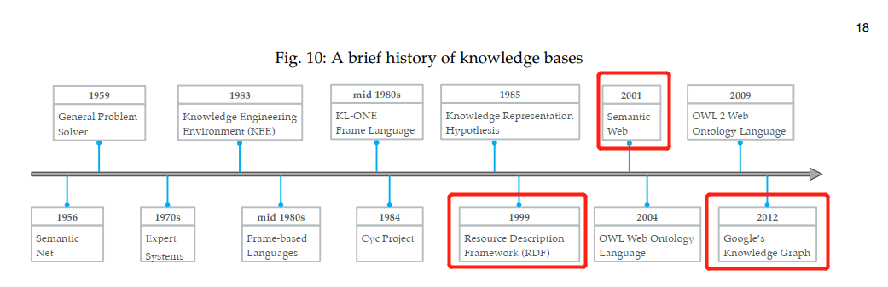
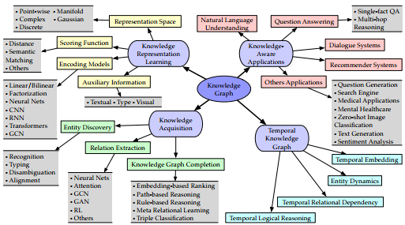
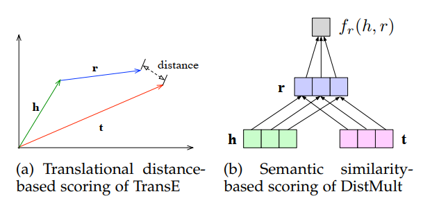
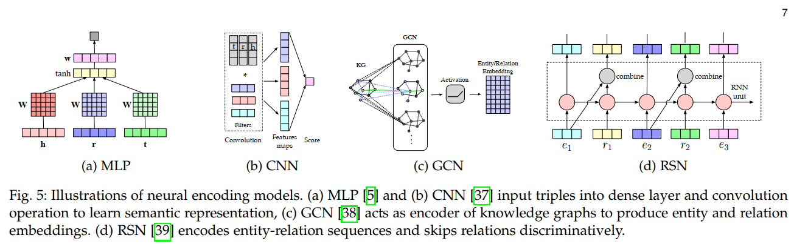

2,315 words in total, 9 minutes required. 图谱论文笔记：Ji, S., Pan, S., Cambria, E., Marttinen, P., & Yu, P. S. (2020). A survey on knowledge graphs: Representation, acquisition and applications. arXiv preprint arXiv:2002.00388. Introduction相比于knowledge base，knowledge graph这个概念侧重于它的graph特性（使用了property graph或者attribute graph来组织实体、关系和语义信息）。RDF是一种组织knowledge的技术手段。 RDF作为一个标准早于Semantic Web概念的提出，后来又增加了OWL和OWL2的技术来扩充Semantic Web。而KG是12年后逐渐兴起的名词，由Google而来。 KG概念发展史 学术界的工作中对于KG的定义尚未有很好的统一，有些文献强调KG能够收集和整合知识到本体中并通过使用一个推力器（reasoner）来推导新的知识；另一方面，有文献则强调KG是一个multi-relation graph来组织带有语义的实体和关系信息。 KGL/KGE：即对KG的表征学习，将实体和关系映射到低维度空间中，同时保留原有的语义信息。本文将其分为表征空间、得分函数（scoring function）、编码模型、附属信息四个方面。 KG Acquisition: 是一类构建获取KG的任务，包括KG completion (KGC)、实体发生和实体/关系抽取等。前者是对已有KG的扩展，后二者是从外部如文本中获得KG的新知识。 KGC中包括基于embedding的排序，关系路径推理（relation path reasoning），基于规则的推理（rule-based reasoning），和元关系学习（meta relational learning）. 实体发现包括识别、去歧（disambiguation）、类别确定（typing）和对齐（alignment） 关系抽取包括基于注意力机制、图卷积网络、对抗训练、增强学习、深度残差学习和迁移学习的方法。 Temporal KG即考虑了时序信息来表征学习中。 KG-aware Applications：即KG相关的应用，主要得益于KG具备的异构信息、丰富的分体和语义，以及多语言特性等。包括自然语言理解、问答、推荐等。 本文的研究分类 KG表征学习KG representation learning称为KGE，multi-relation learning，以及statistical relational learning。 表征空间对于实体和关系的分布式表达，除了传统的实数值的向量、矩阵和张量外，还有复数向量空间（complex values）、高斯空间和流形（manifold）等。 实数值空间的代表工作TransE，其将head entity，relation，tail entity分别转换为d维的向量$\mathbf{h}$，$\mathbf{r}$，$\mathbf{t}$并使其遵循转移原则，即$\mathbf{h} + \mathbf{r} \approx \mathbf{t}$。TransR在此基础上将实体和关系放入两个不同的嵌入空间中，并使用一个投影矩阵来维护两个空间的关联，即$\mathbf{M}_r \cdot \mathbf{h} + \mathbf{r} \approx \mathbf{M}_r \cdot \mathbf{t}$。 复数向量空间的代表工作是ComplEx（参见论文笔记第二篇），对每个$\mathbf{h}$，$\mathbf{r}$，$\mathbf{t}$而言，其有实数和虚数两部分的vector，分别对应于对称和非对称的两类关系。Hermitian dot product被用来完成head、tail和relation间的复合关系。RotatE（参见论文笔记第三篇）则利用了欧拉等式$e^{i\theta} = \cos\theta + i\sin\theta$，提出了一种旋转模型，即在复杂空间中的三元组关系满足$\mathbf{t} = \mathbf{h} \circ \mathbf{r}$，其中$\circ$表示element-wise Hadmard product。 高斯空间主要是来对一些带有不确定性的实体和关系进行建模的。基于density的模型KG2E，认为嵌入实体和关系都符合多维高斯分布，即$\mathcal{H} \sim \mathcal{N}(\mathbf{\mu}_h, \mathbf{\sum}_h)$，$\mathcal{T} \sim \mathcal{N}(\mathbf{\mu}_r, \mathbf{\sum}_r)$。则合成的tail entity的分布符合 $\mathcal{H} - \mathcal{T} \sim \mathcal{N}(\mathbf{\mu}_h - \mathbf{\mu}_r, \mathbf{\sum}_h + \mathbf{\sum}_r)$。另一个代表性工作是TransG，对于实体建模仍然是高斯的，而relation embedding则采用了混合高斯分布，其中$r$的转移向量的第$m$个component符合分布$\mathbf{u}_{r,m} = \mathbf{t} - \mathbf{r} \sim \mathcal{N}(\mathbf{\mu}_t - \mathbf{\mu}_h, (\sigma_h^2 + \sigma_t^2)\mathbf{E})$。 在上述空间中，建模需要远比entity和relation数量多得多的等式（一个entity/relation会涉及到多重关系中）。流形（局部欧几里得空间化的一个拓扑空间，是欧几里得空间中的曲线、曲面等概念的推广）和群（一种集合以及一个二元运算所组成的代数结构）可以完成更为强大和简化的表达。这里引入了核的概念，例如在球面空间中，可以定义如下的流形函数 此处$\mathbf{K}$即为对应的核函数，$\phi$将原始空间映射到希尔伯特空间中。 打分函数 （scoring function）用于测量fact的plausibility，即合理性。energy-based learning：学习一个energy function $\mathcal{E}_\theta(x)$来保证正例能够得到比负例高的分数。可以分为distance-based和semantic similarity based的打分函数。 Scoring Function示例 1) distance-based scoring：即计算转移距离的loss。 传统的关系定义在加法上，如TransE，TransH亦或是TransR；相比之下，TransF定义了点乘上的距离函数，即 KG2E定义了两个打分函数，都是基于距离的，一个是非对称的KL散度度量，另一个则是对称的期望似然。ManifoldE也是基于距离的，定义了流形函数和一个阈值的距离函数。 2) semantic similarity based scoring：采用乘法法则，即使得通过矩阵乘法后得到的映射在空间中靠近。 SME的思想是令两对关系$(h,r)$和$(r,t)$在映射后尽量靠近（求内积），即 而对于$g$的定义可以有线性和双线性两个不同的版本。 DistMult则提出了一种更简化的双线性（bilinear）形式，加入了对relation矩阵为对角的限定： 编码模型 （encoding model）1) 线性模型将relation建模为一种线性/双线性的映射来建立从head到tail的转换。例如ANALOGY使用了如下的双线性模型 2) 因子分解模型将三元组关系的组合看做是一个three-way的张量，则分解一般而言可以看做： RESCAL模型认为$m$个关系中的每一个，都可以从对应的three-way张量中进行分解，如下是第$k$个关系的分解： 3) 大部分的神经网络模型，都是将entity和relation喂入神经网络中，最后得到一个相似度的得分，典型的如MLP，neural tensor network，neural association model等。 神经网络的编码模型 例如上图，MLP可以看做将三元组的embedding进行组合，再通过一个全连接层和sigmoid激活函数来得到相似度得分。 4) 卷积神经网络 ConvE使用了在embedding上进行的2D卷积来建模实体和关系间的交互，如 其中，$\mathbf{M}_h$和$\mathbf{M}_r$是将原来$d$的向量重新构建为一个矩阵，$\text{vec}$则是将卷积后的矩阵重新拉成一个向量。基本上，ConvE通过多层非线性特征的学习来表达实体的语义信息。 ConvKB则没有进行如上的reshaping操作，而是定义如下的交互 5) 循环神经网络 RNN则被用于对涉及多重关系的KG上的游走进行建模。例如在RSN中，引入了skip relation的机制。 6) Transformer CoKE利用Transformer来编码边和路径序列。KG-BERT利用BERT模型来编码实体和关系，考虑上下文的文本信息。 7) 图神经网络 R-GCN通过图神经网络来对entity进行编码，大体的前向传播函数可以认定为 其中，$N^r_i$是实体$i$在关系$r$下的邻居集合，$c_{i,r}$是用来正规化的。上述公式通过迭代从邻接结点进行聚合来学习合适的结点的embedding。完成后，这一embedding还需要根据具体任务实现上层的模型。这里可以认为R-GCN中每个entity被等价地处理了。 上图中展示的SACN则提出了带权重的GCN方法，定义了相同relation类型下两个结点的强度信息。在解码阶段，则使用了ConvE的方法来完成学习。 带附加信息的嵌入表达1) 文本描述 最大挑战在于将图谱结构信息和非结构的文本信息嵌入到同一空间中。思想包括对实体空间和word空间进行对齐，或者使用卷积对实体描述信息进行编码。 一些joint loss function被用来完成带有文本的嵌入表达，例如将knowledge model，text model和alignment model三者loss进行相加等。 2) 类型信息 SSE提出使得归属于同一类别的实体在semantic space中平滑过渡。TKRL提出了type encoder来捕获type hierarchy。 3) 可视化信息 将图片特征和图谱结构信息映射到同一空间中。 知识获取知识获取的目的是从非结构文本中构建图谱，完善一个已有的KG，或者发现和识别实体和关系等。 图谱完善实体发现关系提取 ← Previous Post Next Post→ Table of Contents 1. Introduction2. KG表征学习2.1. 表征空间2.2. 打分函数 （scoring function）2.3. 编码模型 （encoding model）2.4. 带附加信息的嵌入表达3. 知识获取3.1. 图谱完善3.2. 实体发现3.3. 关系提取